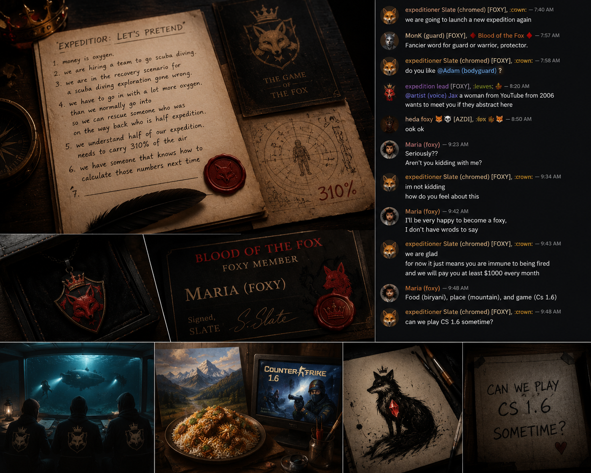

she showed up THREE TIMES IN A ROW. that's the whole resume.
okay so let me break this DOWN. slate just promoted an artist from PAKISTAN to third foxy status. she gets $1000/month, immunity from being fired, AND she has to fire her peers if asked.
slate's response? "you participated three times in a row. that is enough drive to go forever."
when asked for her three favorite things: biryani, mountains, CS 1.6. slate immediately asked if they could play together. we are witnessing the birth of the most wholesome power dynamic in the foxyverse.
the three foxys are now: Heda Foxy (the original), Nancy (expedition lead), and Maria (the third). fada and lucy were supposed to be two of them. the structure shifted. things shift here.
the tea is SCALDING ☕🔥